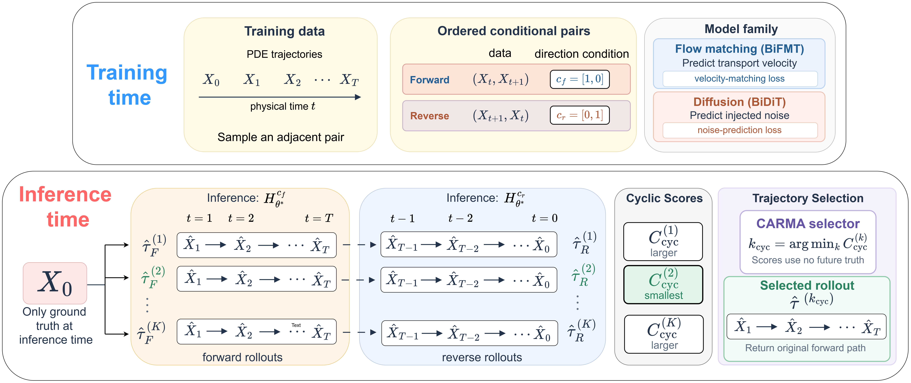

Training
One parameter-shared transformer learns forward and backward transitions from ordered adjacent-state pairs.
Under review at TMLR
CARMA selects among stochastic PDE rollouts using forward–backward consistency. It uses only the observed initial state and requires no test-time parameter updates.
Method
A shared direction-conditioned transformer learns adjacent PDE-state transitions in both time directions. At inference, CARMA ranks each forward rollout using its backward reconstruction.

One parameter-shared transformer learns forward and backward transitions from ordered adjacent-state pairs.
Flow-matching or diffusion surrogates generate multiple autoregressive rollouts from the initial state.
Each terminal state is rolled backward. CARMA returns the forward path with the smallest path-wise cyclic discrepancy.
Results
Ground truth, evaluation-only oracle selection, and CARMA selection across six PDE systems.